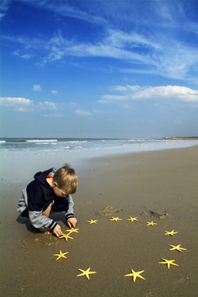
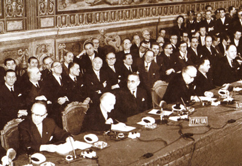

torna
al sommario
vai
a:

I
TRATTATI DELLA COMUNITA' EUROPEA
DAL
1950 AD OGGI. DALLA DICHIARAZIONE SCHUMAN ALLA COSTITUZIONE EUROPEA
Il processo di integrazione
europea trove le sue origini nei trattati degli anni '50:
 Il
9
maggio 1950 venne approvata la Dichiarazione Schuman.
Questa dichiarazione propose di creare una forma di amministrazione
comune nella produzione carbo-siderurgica nel quadro di
un'organizzazione aperta ad altri paesi europei, essendo
stata una delle cause della I° e della II° guerra
mondiale. Lo scopo principale di questa collaborazione era quello di
salvaguardare la pace tra gli stati europei, evitando ulteriori
conflitti.
Il
9
maggio 1950 venne approvata la Dichiarazione Schuman.
Questa dichiarazione propose di creare una forma di amministrazione
comune nella produzione carbo-siderurgica nel quadro di
un'organizzazione aperta ad altri paesi europei, essendo
stata una delle cause della I° e della II° guerra
mondiale. Lo scopo principale di questa collaborazione era quello di
salvaguardare la pace tra gli stati europei, evitando ulteriori
conflitti.
Il
18 aprile 1951 venne istituita
la Comunità
Europea del Carbone e dell'Acciaio (C.E.C.A.)
tra Francia, Italia, Germania, Belgio, Paesi Bassi e Lussemburgo. Lo
scopo principale era quella di creare un mercato comune nel settore
carbo-siderurgico. Con la CECA, per la prima volta, un settore
importante dell'economia veniva sottoposto al controllo di un ente
sovrannazionale.
Nel
1952 venne firmato a Parigi dai sei
membri della CECA il Trattato
per la Comunità Europea di Difesa (C.E.D.). In
piena guerra fredda appare
urgente la necessità di una integrazione nel campo della
difesa e della politica in generale. Il trattato non ottiene le
ratifiche necessarie, poichè la Francia votò
contro: l'aspetto politico-militare dell'intgrazione europea viene
quindi messo da parte e ci si orienta verso un rafforzameno
dell'unità economica tra i sei paesi.
Il 25
marzo 1957 vennero
firmati a Roma due Trattati istitutivi:

1. Comunità
europea dell'Energia Atomica (C.E.E.A
o Euratom), che
aveva lo scopo di coordinare i programmi di ricerca degli stati membri
relativi all'energia nucleare e assicurare un uso pacifico della
stessa;
2. Comunità Economica Europea (C.E.E),
che aveva l'obiettivo di assicurare la libera circolazione delle merci
fra gli stati mebri, l'eliminazione delle barriere doganali e la
creazione di una cintura doganale esterna unica.
Questi
trattati entrarono in vigore, dopo la ratifica, il 1° gennaio
1958.
Nel
1986
venne istituito un ulteriore trattato, l' Atto
Unico Europeo che
consiste nella libera circolazone delle persone e dei capitali e nello
spostamento delle competenze dai singoli stati alla
Comunità. Con l'approvazione di questo atto la
Comunità Europea, che sino ad allora aveva operato nei
limiti dell'integrazione economica, comincia a porsi l'obiettivo
dell'integrazione sociale (Europa sociale), poiché, grazie a
questa, si sarebbe riuscito a garantire l'equilibrio fra i vari paesi,
assicurando quelle condizioni di concorrenza che sono forse il cardine
fondamentale della Comunità.
Nel
1992 ci fu la realizzazione del Trattato
di Maastricht
che prevedeva:
1. La creazione dell' Unione Europea
riunendo al suo interno la Ceca, l'Euratom e la Cee;
2.L'istituzione della
cittadinanza europea;
3. L'unificazione monetaria;
4. L'ampliamento dei settori di
competenza comunitaria.
Nel 1998 venne siglato il Trattato di Amsterdam
in materia di :
1. Politica estera e sicurezza
comune;
2. Cooperazine tra magistrature
e polizie.
Nel 2000 con il Trattato di Nizza
venne accolta la richiesta di adesione di 12 paesi, venne sottoscritta
la Carta dei Diritti Fondamentali del Cittadino Europeo e venne
affidato ad una Convenzione il mandato di predisporre progetto di una
Costituzione Europea.
Il
Trattato di Lisbona

Il
"Trattato di
Lisbona" (noto anche come "Trattato di
riforma") è
il trattato redatto per sostituire la Costituzione europea bocciata
nei referendum francese e olandese del 2005.
L'intesa
arriva dopo due anni del "periodo di riflessione" ed è
stata preceduta dalla Dichiarazione di Berlino del 25 marzo 2007, in
occasione dei 50 anni dell'Europa unita, in cui il cancelliere
tedesco Angela Merkel e l'ex premier italiano Romano Prodi
esprimevano la volontà di sciogliere il nodo entro pochi
mesi
al fine di consentire l'entrata in vigore di un nuovo trattato nel
2009, anno delle elezioni del nuovo Parlamento europeo.
Nello
stesso periodo
nasce il cosiddetto "Gruppo Amato" (formato da politici
europei), ufficialmente chiamato "Comitato d'azione per la
democrazia europea" (Action Committee for European Democracy,
ACED) supportato dalla Commissione europea che ha inviato due suoi
rappresentanti alle riunioni. Il gruppo ha avuto il mandato (non
ufficiale) di prospettare una riscrittura della Costituzione basata
sui criteri che erano emersi durante le consultazioni della
Presidenza tedesca con le cancellerie europee. Il risultato
è
stato presentato il 4 giugno 2007: il nuovo testo presenta in 70
articoli e 12.800 parole circa le stesse innovazioni della
Costituzione che aveva 448 articoli e 63.000 parole diventando un
punto di riferimento per i negoziati.
Il
Consiglio Europeo
di
Bruxelles, sotto la presidenza tedesca, il 23 giugno 2007 raggiunse
l'accordo sul nuovo Trattato di riforma.
-
CONTENUTI:
L'accordo
recepisce gran parte delle innovazioni contenute nella Costituzione
europea. Rispetto a quel testo, queste sono le modifiche approvate a
Bruxelles:
Non
esisterà un solo trattato (come la Costituzione europea), ma
saranno riformati i vecchi trattati. Il Trattato di riforma
modificherà quindi il Trattato sull'Unione europea (TUE) e
il
Trattato che istituisce la Comunità europea (TCE). Il primo
manterrà il suo titolo attuale mentre il secondo
sarà
denominato Trattato sul funzionamento dell'Unione. Ad essi vanno
aggiunti la Carta dei diritti fondamentali e il Trattato Euratom
(quest'ultimo non era stato integrato nella costituzione).
È
stato tolto ogni riferimento esplicito alla natura costituzionale nel
testo: sono stati eliminati i simboli europei e si è
ritornati
alla vecchia nomenclatura per gli atti dell'UE: tornano "regolamenti"
e "direttive" al posto delle "leggi europee" e
"leggi quadro europee".
Il
"Ministro degli Esteri" europeo tornerà a chiamarsi
"Alto rappresentante per la politica estera e sicurezza comune",
benché con i poteri rafforzati indicati in costituzione:
sarà
anche vicepresidente della Commissione.
Vengono
meglio delimitate le competenze dell'UE e degli stati membri,
esplicitando che il "travaso di sovranità" può
avvenire sia in un senso (dai paesi all'UE, come è sempre
avvenuto) che nell'altro (dall'UE ai paesi).
Il
nuovo metodo decisionale della "doppia maggioranza" entrerà
in vigore nel 2014 e a pieno regime, nel 2017.
Aumentano
i poteri dei Parlamenti nazionali che hanno più tempo per
esaminare le leggi comunitarie e rimandare alla Commissione
La
Carta dei diritti fondamentali non è integrata nel trattato,
ma vi è un riferimento ad essa. Il Regno unito ha ottenuto
una
"clausola di esclusione" per non applicarla sul suo
territorio al fine di preservare la common law, lo stesso è
stato concesso alla Polonia, tuttavia, con l'elezione a premier di
Donald Tusk quest'ultimo si è impegnato a non far valere
l'opt-out ottenuto.
Il
Regno Unito e l'Irlanda hanno ottenuto un meccanismo per essere
esentati da decisioni a maggioranza nel settore "Giustizia e
affari interni".
Viene
specificato che la PESC (Politica Estera e di Sicurezza Comune) ha un
carattere specifico all'interno dell'UE e che non può
pregiudicare la politica estera e la rappresentanza presso le
istituzioni internazionali degli stati membri.
La
concorrenza non è più ritenuta un obiettivo
fondamentale dell'Unione, ma viene citata in un protocollo
aggiuntivo.
Viene
introdotta l'energia nella clausola di solidarietà con cui
gli
stati membri si impegnano a sostenere gli altri in caso di
necessità.
Viene
specificata la necessità di combattere i cambiamenti
climatici
nei provvedimenti a livello internazionale.
Viene
introdotta la possibilità di recedere dall'UE (fino ad oggi
vi
si poteva solo aderire).
-
LA TRATTATIVA:
Essenzialmente
tre sono stati i paesi con cui si è trattato più
a
lungo per un accordo: Polonia, Regno Unito e Francia. I punti
controversi sul tavolo negoziale erano i seguenti:
- La Polonia rifiutava il metodo della maggioranza
qualificata per le
decisioni in seno al Consiglio Europeo.
- Diversi paesi tra cui soprattutto Regno Unito,
Paesi Bassi e
Repubblica Ceca chiedevano di cancellare la figura del Ministro degli
Esteri europeo, mantenendo l'autonomia nazionale in politica estera.
- Il Regno Unito si opponeva al valore giuridico della
Carta dei
diritti fondamentali dell'Unione europea e alla superiorità
del diritto europeo in tutti i settori.
- La Francia chiedeva la soppressione del riferimento a
un mercato
comune dominato dalla libera concorrenza, per porre freni al
liberismo europeo.
Un
accordo tra Varsavia e la Presidente tedesca Merkel, che prevedeva
l'entrata in vigore della maggioranza qualificata solo nel 2014,
è
stato dapprima accettato e poi respinto dalla Polonia. A questo
punto, sotto la pressione dell'Italia, il cancelliere Merkel aveva
proposto di indire una nuova Conferenza intergovernativa senza
includere la Polonia, che di fatto sarebbe rimasta fuori dal nuovo
trattato.
-
L'ITER DI RATIFICA:
L'Ungheria
è stato il primo paese a ratificare il trattato di Lisbona,
il
17 dicembre, a soli quattro giorni dalla firma dello stesso.
Si
prevede che il trattato venga ratificato dagli altri stati nel corso
del 2008.
Solo
l'Irlanda ha dichiarato di voler effettuare un referendum
confermativo, mentre i Paesi Bassi, la Repubblica Ceca e la Danimarca
hanno deciso di non tenere un nuovo referendum: si prevede quindi di
riuscire a far entrare in vigore il Trattato il 1 gennaio 2009, prima
delle elezioni europee di giugno.
torna al
sommario